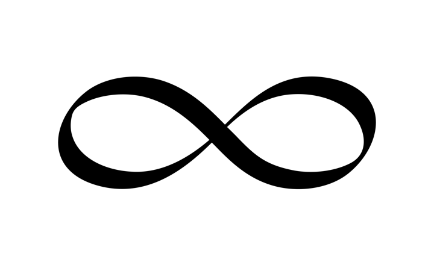
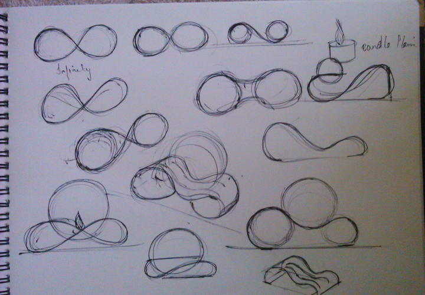
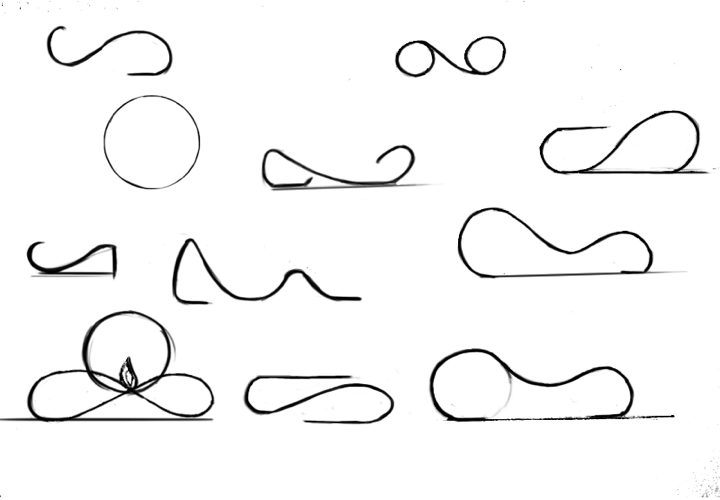
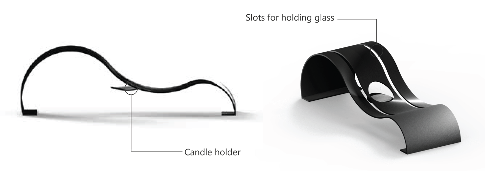
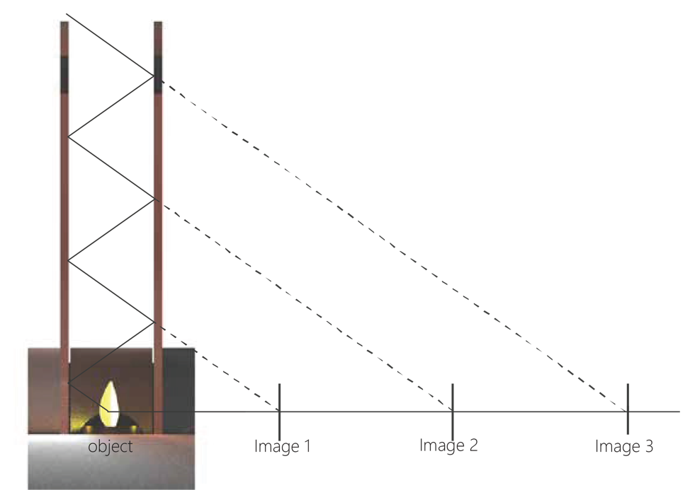

BACKGROUND
The Infinity Lamp, designed by taking inspiration from the concept of infinity, is a lamp that leverages the phenomenon of reflection to create infinite images of a solitary candle flame. I designed this procuct during my internship with Trifecta Design. I was involved in every step, right from conceptualization to the manufacturing of the product.
THE CONCEPT OF INFINITY

The lamp is designed by taking inspiration from the concept of infinity, I used the infinity symbol to design the base of the lamp.
IDEATION SKETCHES


SELECTED DESIGN
HOW IT WORKS
Formation of multiple images: The light emitted by the candle flame gets reflected multiple times due to the semi reflective glass plates, creating an impression of infinite images.